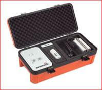

Geofono AquaPhon A200 GNSS
Geófono profesional diseñado para la detección precisa de fugas de agua en redes de distribución presurizadas mediante el método electroacústico.
Descripción
El Aquaphon A200 GNSS es un geófono profesional diseñado para la detección precisa de fugas de agua en redes de distribución presurizadas mediante el método electroacústico. El sistema permite localizar el punto exacto de una fuga identificando el ruido generado por el escape de agua en las tuberías.
La detección se realiza en dos fases. En primer lugar se utiliza un micrófono de contacto para escuchar accesorios de la red como válvulas, hidrantes o contadores y delimitar el área de fuga. Posteriormente se emplea un micrófono de suelo para localizar con precisión el punto exacto mediante la escucha desde la superficie.
El equipo incorpora un sistema avanzado de amplificación y filtrado de señales acústicas con filtros ajustables entre 0 y 12 kHz, lo que permite eliminar ruidos ambientales y mejorar la identificación del sonido de fuga.
Dispone de pantalla táctil a color de 5,7 pulgadas que muestra información en tiempo real como el espectro de frecuencias, el nivel de ruido detectado y el estado del equipo.
El sistema funciona de forma totalmente inalámbrica mediante radio digital SDR entre la unidad central, los micrófonos y los auriculares, proporcionando mayor comodidad durante las inspecciones en campo.
El Aquaphon A200 GNSS incorpora GPS integrado para registrar automáticamente la ubicación de las fugas detectadas y permite almacenar grabaciones de sonido para su análisis posterior o para fines de formación técnica.
Especificaciones técnicas
| Tipo de equipo | Geófono electroacústico para detección de fugas |
| Pantalla | Táctil TFT 5,7” – 640 x 480 px |
| Filtro de frecuencia | Ajustable entre 0 y 12 kHz |
| Memoria | 90 MB para almacenamiento de mediciones |
| Comunicación | Radio digital SDR inalámbrica |
| GPS | Integrado para registro de posición de fugas |
| Alimentación | Baterías recargables de ion-litio |
| Autonomía | Más de 10 horas de funcionamiento |
| Protección | IP65 / IP67 según configuración |
| Temperatura de operación | −20 °C a +60 °C |
| Peso unidad central | Aprox. 1,2 kg |
Imágenes del producto

Videos de funcionamiento
Documentación
Descargar la ficha técnica completa del instrumento.
Descargar ficha técnica (PDF)